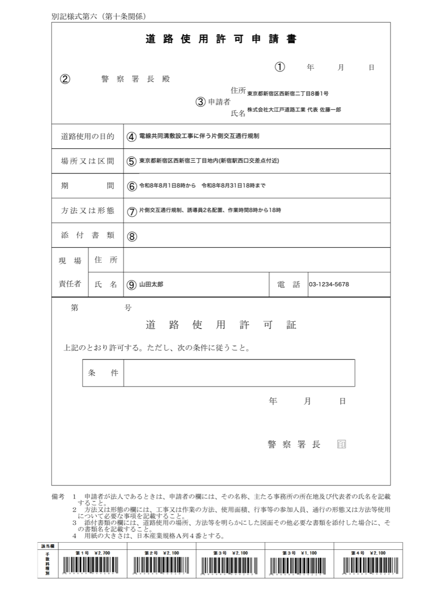
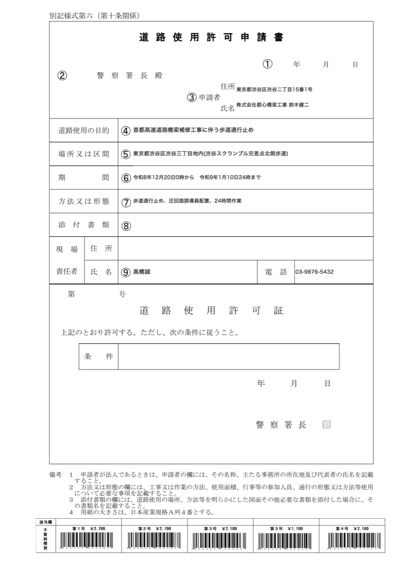
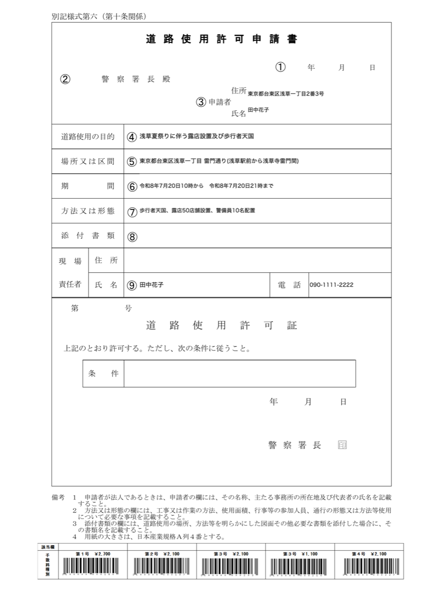

道路使用許可申請書・安全書類・点検記録・作業日報——紙とPDFのままでは、探せない・集計できない・引き継げない。建設書類の様式を読み取るAIシステム（本番運用中・都知事杯オープンデータ・ハッカソン2026提出）を使い、人の目の確認込みで台帳化して納品します。
Before: 道路使用許可申請書 3枚（PDF/写真のまま）



After: 検索・集計できるExcel台帳（CSVサンプルをダウンロード）
| No | 書類種別 | 工事・行事名 | 申請者 | 施工場所 | 期間 | 時間帯 | 規制内容 | 備考 |
|---|---|---|---|---|---|---|---|---|
| 1 | 道路使用許可申請書 | 電線共同溝敷設工事に伴う片側交互通行規制 | ㈱大江戸道路工業 | 新宿区西新宿三丁目地内 | 2026-08-01〜08-31 | 08:00-18:00 | 片側交互通行 | 和暦→西暦を自動変換 |
| 2 | 道路使用許可申請書 | 橋梁補修工事に伴う歩道通行止め | ㈱都心橋梁工業 | 渋谷区渋谷三丁目地内 | 2026-12-20〜2027-01-10 | — | 歩道通行止め | 年またぎ工期を自動判定 |
| 3 | 道路使用許可申請書 | 浅草夏祭り 露店設置・歩行者天国 | 個人申請 | 台東区 雷門通り | 2026-07-20 | 10:00-18:00 | 歩行者天国 | 個人様式にも対応 |
※ サンプルはすべて架空データです。列構成（台帳のフォーマット）は貴社の指定に合わせます。
初回モニター 3,000円 ／ 書類50枚まで・3社限定・翌々営業日納品
通常料金: 100枚まで 9,800円（3営業日）／ 以降100枚ごと +8,000円 ／ 毎月の定期台帳化は月額でお見積り
モニターの条件は「実務で使えたか・使えなかったか」のご感想を1通いただくことだけです。修正は1回無料。
件名・本文は自動で入ります。書類を添付して送るだけ。